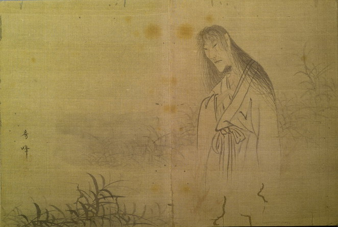

幽霊。女性と思われる。長い髪を垂らし、目はつり上がっており、耳は大きい。着物の袂が緩んでおり、胸元に左手を入れている。脚は描かれていない。笹原と思しきところにいる。
著作者：秀峰／出典：親書誌：U426_nichibunken_0155：東都画家妖怪画帖；トウトガカヨウカイガチョウ／日付：2010／資源識別子：U426_nichibunken_0155_0008_0000
Copyright (c)2010- International Research Center for Japanese Studies, Kyoto, Japan. All rights reserved.